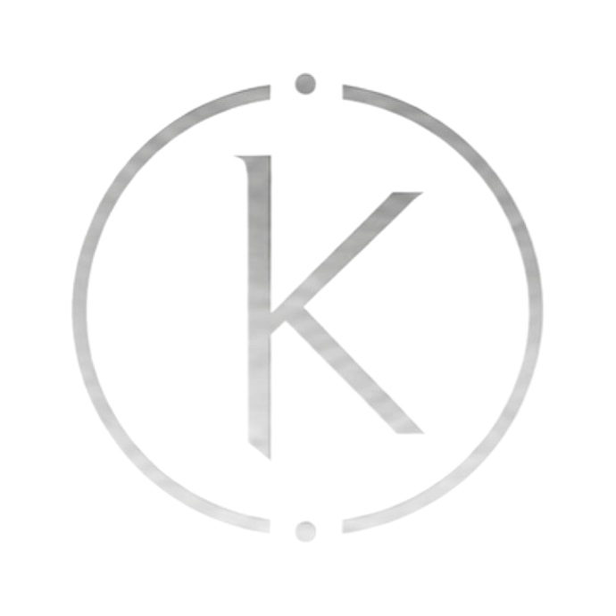

Welcome to KALOS.
The archive is being built. New works, concepts and texts will appear here.

The archive is being built. New works, concepts and texts will appear here.
KALOS develops original musical projects that can begin with a concept, a fictional artist or band, a narrative world, a character, or simply a musical intuition.
The work moves through writing, artistic direction, experimentation, generation, selection and post-production, using AI-based musical tools as instruments within the creative process.
Original music for film, games, visual projects, advertising and other selected collaborations.
contact@kalos.art